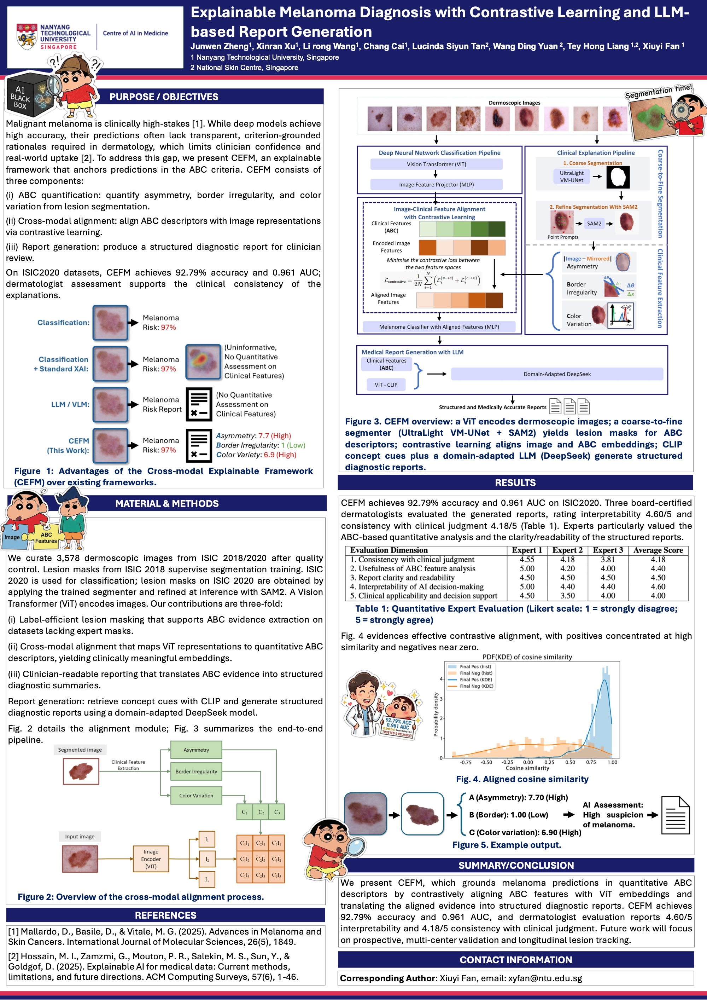

From pixels to
clinical meaning.
Medical images, clinical knowledge, and AI that can explain its reasoning.
Image↔ABC→Report
always asking “why?”
Medical AI. Clinical meaning.
M.Eng. (Research) · Nanyang Technological University02 / THE PERSON BEHIND THE PAPER
I'm a research master's student at NTU, working with Prof. Xiuyi Fan in the Health Informatics Lab. My interests sit at the intersection of medical AI, explainability, multimodal learning, and trustworthy AI.
I enjoy taking an idea all the way from a research question to a working system. My industry experience spans AI agents, retrieval systems, and ML engineering.
Inside my researchConnecting medical images with clinically meaningful questions.
Choose a point. Follow a connection.
03 / A LITTLE RESEARCH EXHIBITION
Connecting medical images, clinical evidence, and language — towards explanations clinicians can understand.
a question → an experiment → a paper ✧
04 / A LITTLE SOMETHING I BUILT
A little help for a big next step. An AI job-hunt copilot for fresh graduates, from understanding a role to preparing for an interview.
made with curiosity (and a lot of coffee) ☕Explore the live page right here, or open the full site.
05 / THE NEXT CHAPTER
I'm looking for PhD opportunities in medical AI, explainable AI, and multimodal learning. I'd love to discuss research ideas and potential fit.
GitHubMedical images, clinical knowledge, and AI that can explain its reasoning.
always asking “why?”